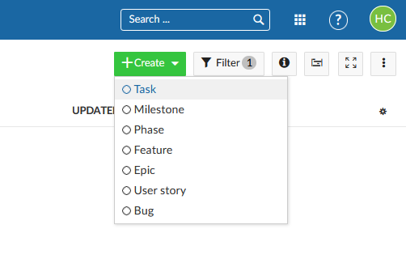
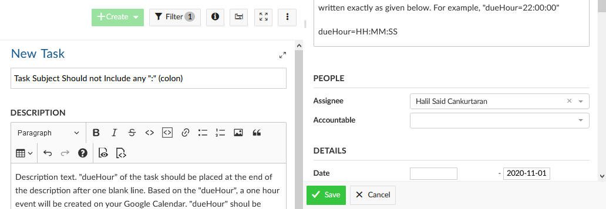
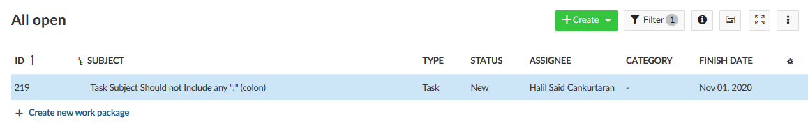

How to Create a Task to Synchronize
Tapir Lab.
December 2020
How to Create a Task to Synchronize
Steps:
- Log into your OpenProject account and go to the work packages page.
- Click, “+Create” button on the right upper side of the page.
- Enter a task subject. The subject should not include any “:” (colons).
- Specify the description of the task, then, press enter and start a new line.
- If the first line includes only three “!” (“!!!”), it will not be synchronized!
- To clarify, the first line should be in the form of “!!!\n” to not to synchronize
- Specify the time that you want to create your task on the Calendar as below:
- dueHour=HH:MM:SS
- For example, it should be “22:00:00” to create an event between 10 pm–11 pm.
- Tasks should be assigned to one of the members.
- If not, ‘Not assigned to anyone’ will be written into the explanation of the event.
- Specify the “Finish Date” of the task.
- If “Finish Date” is not specified, an event will be set on the creation time of the task.
- If you get an error, please check the whether requirements are satisfied or not.
- Refer to the following pages for an example of task creation.
Create a Task on OpenProject
Create Task
Fill in the Details of the Task
Details of Task
An Example Task After Creation
Created Task
// reveal.js plugins